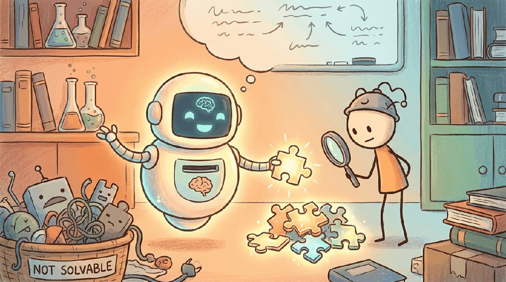

The full ideation-to-MVP arc for LLM-based products. The chapter covers finding LLM-worthy problems (heuristics, capability mapping), going from hypothesis to product spec, the LLM-PM job, UX patterns specific to AI products, strategy and prioritization, vendor evaluation (build vs buy), risk and feasibility assessment, observe-steer development, the founder's prototype loop, documentation as control surface, and the prototype-to-MVP transition.
The canonical anchor is OpenAI's ChatGPT launch (Nov 2022), the moment users began paying for an LLM at scale and a new product space opened. The exemplar of an LLM-worthy problem is Klarna's AI assistant (Feb 2024), which handled two-thirds of customer-service chats and did the work of roughly 700 contracted reps in its first month: a workflow whose shape (text in, text out, high volume, paid alternative) matched what an LLM does well.
Sections in This Chapter
- 67.1 Ideation: Finding LLM-Worthy Problems Heuristics for spotting problems where LLM economics work, and the boundaries where they do not.
- 67.2 Problem-Discovery Heuristics A taxonomy of discovery patterns: customer interviews, log mining, workflow shadowing, the unmet-needs framework.
- 67.3 The Bet-My-Money Test and Capability Mapping A founder-level test for filtering ideas, plus the LLM capability map you use to match problem to model.
- 67.4 From Hypothesis to Product Spec Turning a validated idea into a concrete spec: scope, success criteria, evaluation harness, rollout strategy.
- 67.5 LLM Product Management How the PM job changes for LLM products: model lifecycle, eval ownership, prompt drift, and the data-quality flywheel.
- 67.6 UX and Iteration for LLM Products Streaming UIs, confidence display, undo / re-try patterns, and the iteration loops that compound over weeks.
- 67.7 LLM Strategy & Use Case Prioritization Portfolio frameworks (high-impact vs quick-win), the moat questions, and resource-allocation patterns.
- 67.8 LLM Vendor Evaluation & Build vs. Buy Frontier API vs open-weight vs fine-tune decision tree, with cost / quality / lock-in trade-offs.
- 67.9 What Makes AI Products Different Non-determinism, eval-driven dev, model versioning, and the operational realities that distinguish AI products.
- 67.10 Choosing the Model's Role Where the LLM sits in your product: copilot, autopilot, search, generator, judge, agent loop.
- 67.11 Risk and Feasibility Assessment Technical risk (model capability, latency, cost), product risk (adoption, churn), and governance risk.
- 67.12 The Observe-Steer Development Loop The 2026 dev loop: log production, find regressions, write evals, ship a fix; the LLM-specific CI/CD.
- 67.13 The Founder's Prototype Loop Solo / small-team prototype tactics: vibe coding, evaluation cycles, customer co-design rhythms.
- 67.14 Documentation as Control Surface Why writing docs is the highest-leverage activity for an LLM product: prompts, evals, runbooks, decision logs.
- 67.15 From Prototype to MVP The hardening checklist: latency budgets, cost monitoring, eval gates, on-call playbooks, the readiness review.
What Comes Next
In the next section, Section 67.1: Ideation: Finding LLM-Worthy Problems, we get to work on the chapter's first concrete topic. After this chapter you continue to Chapter 67: LLM Product Management.